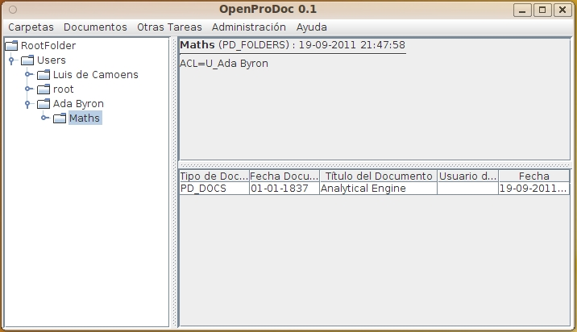

La ventana principal de OpenProdoc tiene 2 zonas principales:
El árbol nos permite navegar por las distintas estructuras de información que componen el repositorio. A partir de una rama principal (RootFolder) se puede abrir las distintas carpetas contenidas en ella. Siempre existirá una carpeta Users que contiene las carpetas personales de cada usuario. Según los permisos, odrá verse solo la carpeta personal u otras carpetas de otros usuarios a las que se tenga autorizado el acceso.
La estructura de carpetas que puede verse depende de las estructuras creadas y de los permisos. Si un usuario no tiene permisos sobre una carpeta o documento, no le aparecerá en ningun caso, aunque si podrá aparecer en los árboles de otros usuarios autorizados.
El arbol de carpeta presenta una estructura de carpetas con iconos junto al nombre de carpeta que tiene el siguiente significado:
En el caso del cliente Swing, la apariencia es ligeramente diferente, pero el comportamiento es básicamente el mismo.
Cuando se navega por las carpetas, la zona derecha contendrá a su vez dos zonas:
La tabla de documentos muestra los datos:
Haciendo doble-click sobre el título del documento se abrirá este con la aplicación o plugion asociado al tipo de archivo (tipo mime/extensión)
Siempre que se selecciona una carpeta pulsando sobre su nombre en el árbol, o un documento, pulsando sobre la línea en la lista de documento, se convierten en la "carpeta actual" o el "documento actual". Todas las operaciones se realizan sobre el elemento actual, por tanto, al elegir por ejemplo Documentos->Borrar, se borrará el documento actual, y al elegir Carpetas->Alta, se añade una carpeta dentro de la carpeta actual.
En la parte superior se dispone de unos menús desplegables para realizar operaciones sobre la carpeta actual o sobre el documento actual, así como otra serie de opciones. Al elegir una opción del menú, aparecerá en el cliente Web aparecerá un formulario para realizar la operación en la zona derecha de la pantalla. En el caso de los clientes Swing, aparecerá una ventana emergente para realizar la operación.

En la versión de cliente Swing, esa tabla de documentos puede ordenarse seleccionando la cabecera de cada columna. Puede también cambiarse el tamaño de cada columna arrastrando la línea separadora de las cabeceras